Moretion Device Teleoperation of Unitree Robot & AOYI Dexterous Hand
Network Connection
Use a router whose network segment is fixed at 192.168.123.xxx, because Unitree robot teleoperation can only be driven under this network segment.
Notes:
-
The computer running the MS software connects to the router wirelessly
-
The Unitree robot connects to the router via a wired connection
-
The laptop (Linux) running the Unitree robot driver script connects to the router wirelessly
Laptop (Linux) Information
Check the Computer's IP
Right-click on the desktop and select Open in Terminal, then enter the command ifconfig to check the IP. You can see that this computer's IP is 192.168.123.122
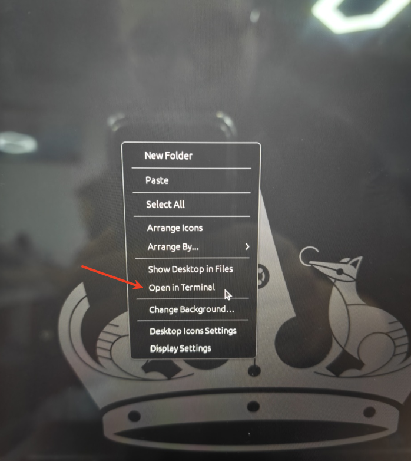
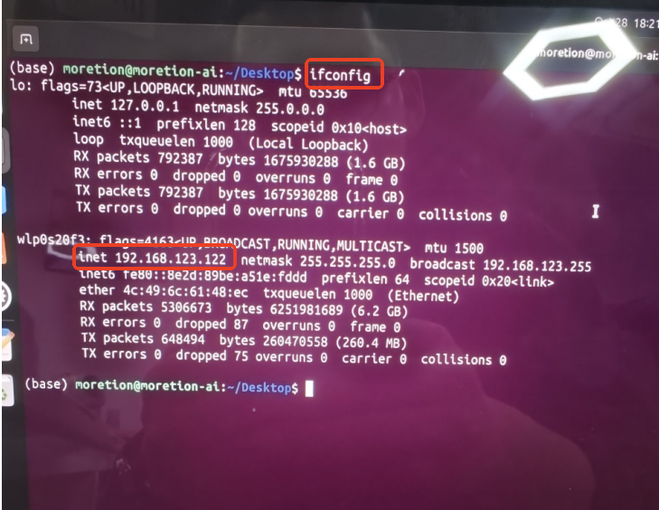
Set the Robot Driver Script IP and Port
Double-click to open the moxun_robot.py script under the /home/moretion/Desktop/motionCapture_teleoperte path to set the IP and port. The IP is the one checked above, and the port can be customized, for example: 8888
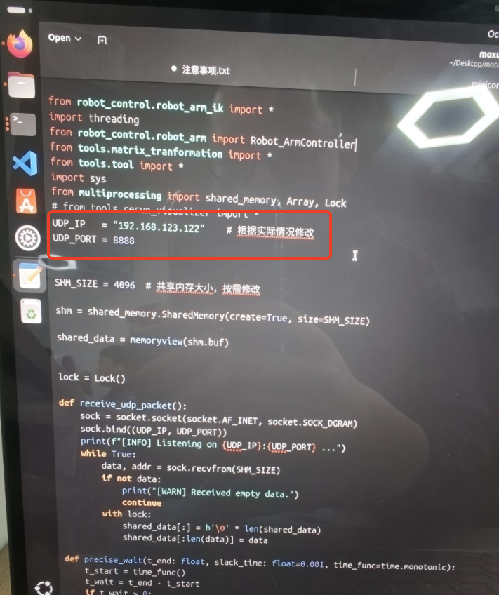
MS Software Settings
Magnetic Calibration
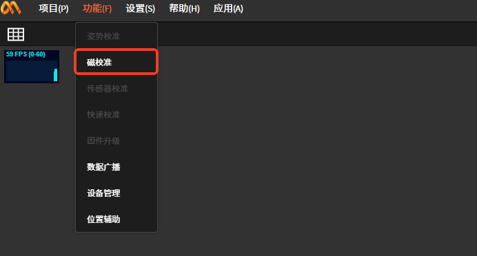
Connect Devices
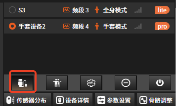
Combine Devices
Using the full-body suit and the data glove without combining them may affect the robot's driving
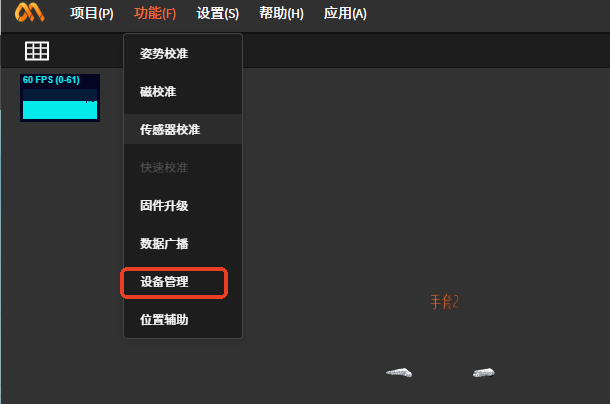
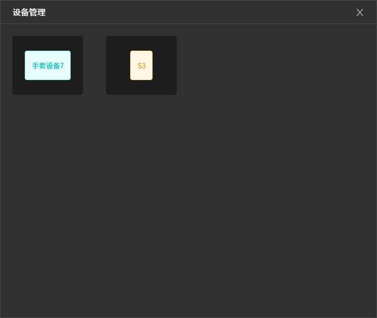
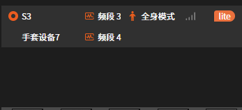
Pose Calibration
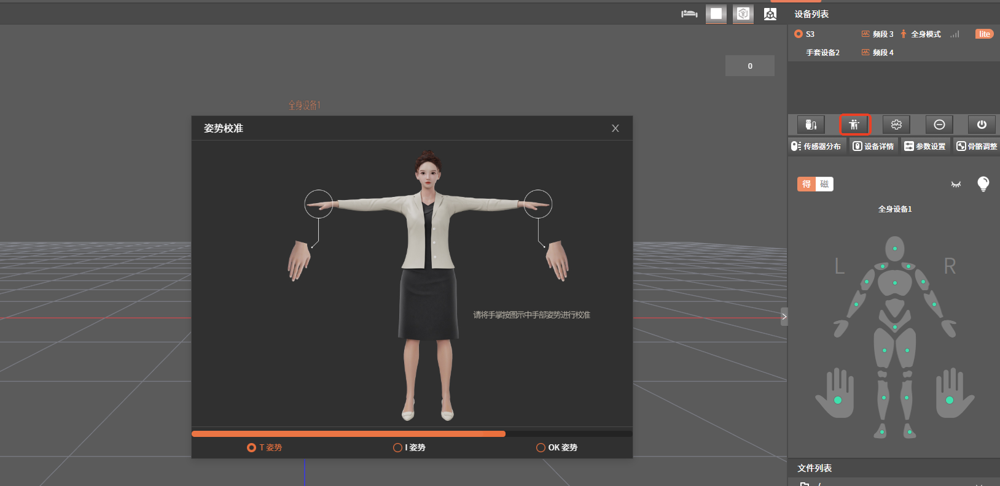
Data Broadcast
Select UDP as the protocol type
IP and port explanation:
192.168.123.122:8888 is the IP and port set in the Huawei laptop (Linux) script moxun_robot.py
192.168.123.36:7777 is the IP and port set in the interface of the AOYI dexterous hand software
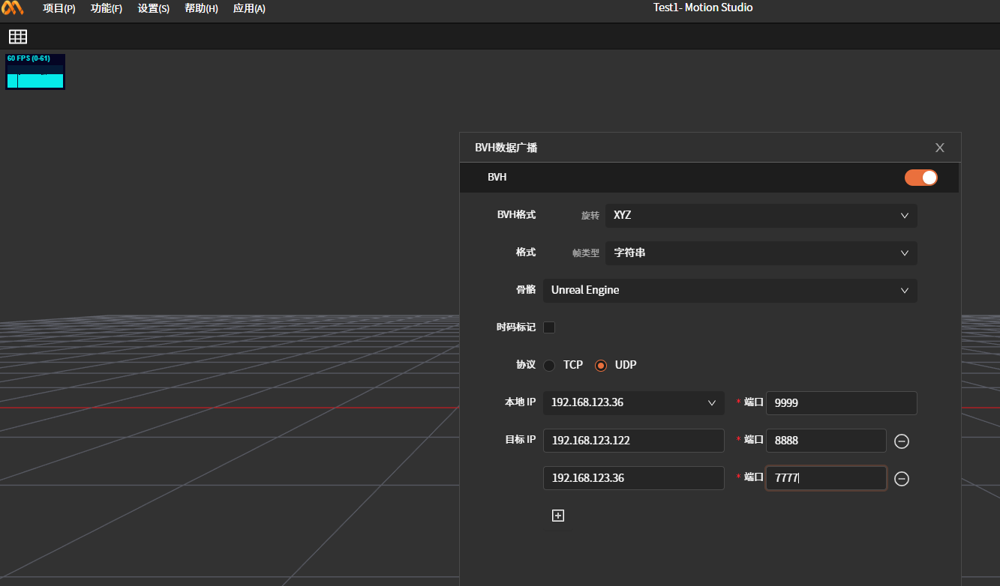
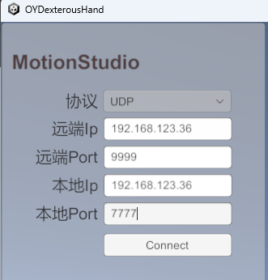
AOYI dexterous hand software settings
Requires that the Moretion data glove can properly drive the AOYI dexterous hand. For detailed instructions, see the document "Moretion Data Glove + AOYI Dexterous Hand Usage Document".
Run the Robot Driver Script
Prerequisite: The above procedures have been completed, and the Unitree robot has been switched to test mode
Open the Console
In the Huawei laptop (Linux), under the /home/moretion/Desktop/motionCapture_teleoperte folder, right-click and select Open in Terminal (open the console).
Create a Conda Environment
Enter the command conda activate tv and press the "enter" key to switch the environment
Run the Script
Enter the command python moxun_robot.py and press the "enter" key
If all the above procedures have been performed correctly, the robot will switch to the ready state. At this point, the person wearing the motion capture equipment assumes the preparation pose shown in the figure below
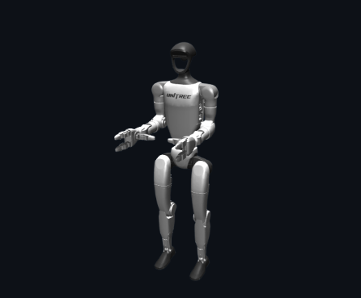
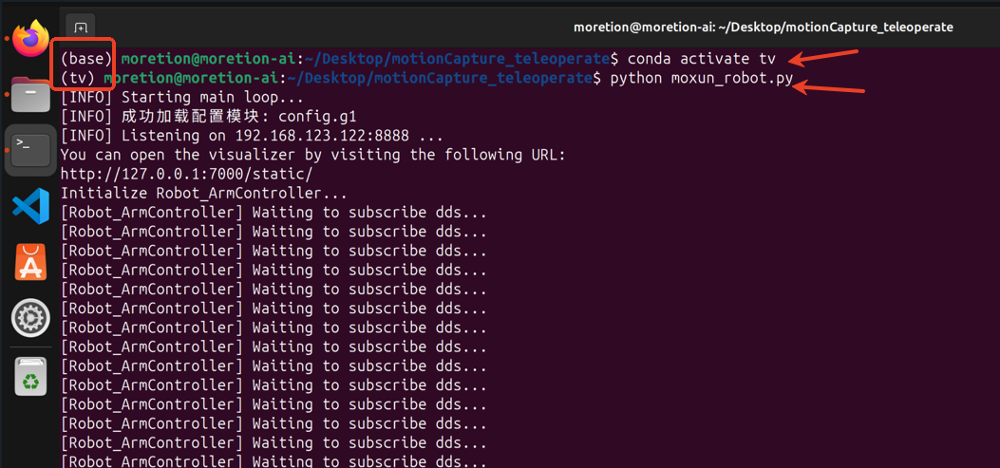
Enter the command r and press the "enter" key
Under normal circumstances, the person can now teleoperate the robot
Exit the Program
Press ctrl+c in the console to exit the program
Provided the console is not closed, next time you can proceed directly from "# Run the Script" onwards
Notes
During robot teleoperation, the Moretion software cannot perform pose calibration
When teleoperating the Unitree robot & AOYI dexterous hand, the Moretion full-body suit + data glove must be switched to combined mode
Equipment list: router, Ethernet cable, computer running the MS software (Windows), computer running the teleoperation (Linux), full-body motion capture device (1), data glove motion capture device (1)